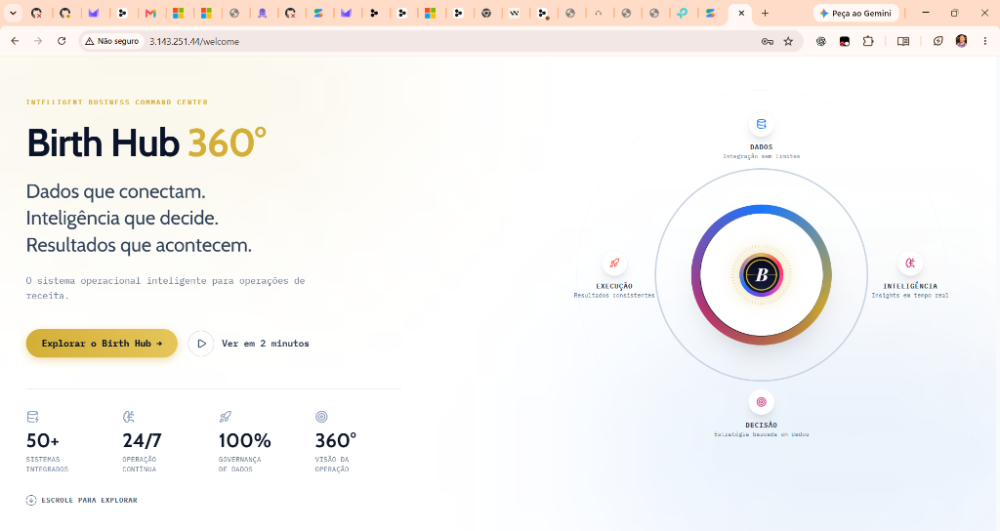
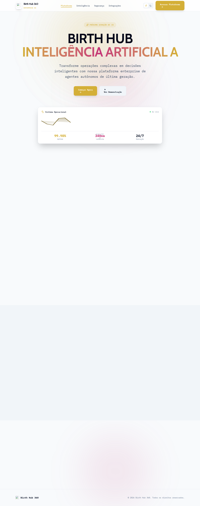
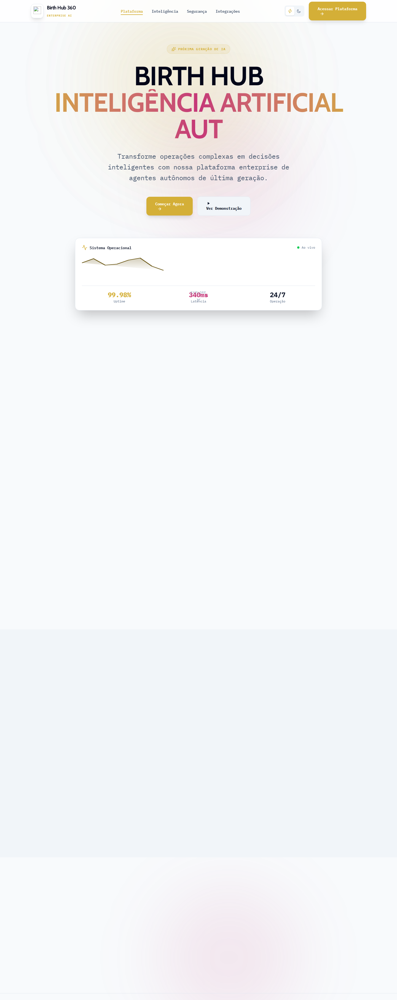

Evolução Sistemática por Módulo
Estrutura: BEFORE ↓ PROBLEMA ↓ DESIGN DECISION ↓ AFTER
Módulo 01
Landing Page & Portal de Entrada
Before
Tela dividida clara com formulário sem contextualização de marca, botões genéricos de gradiente e ausência da órbita de comando.
Problema
Parecia um SaaS de inteligência artificial genérico, perdendo o DNA histórico do portal BirthHub 360 e o impacto visual da marca.
Design Decision
Painel hero em Midnight Navy (#0B132B), grid de comando, headline editorial em Sora, estatísticas em ouro e componente SVG CommandOrb animado.
After
Sensação imediata de cockpit executivo de alto padrão com números dinâmicos e órbita 360° representando Dados, Inteligência, Decisão e Execução.
Referência de DNA Histórico / Estado Inicial

Novo Design Redesenhado
Módulo 02
Hub Central & Orquestração Orbital 360°
Before
Fundo claro cinza degradê, cards com alto contraste desbalanceado, visual sem hierarquia unificada de comando.
Problema
Falta de atmosfera de cockpit espacial, elementos flutuantes sem ancoragem estrutural e cores excessivamente dispersas.
Design Decision
Fundo navy imersivo com grid sutil de precisão, halos dourados e azuis calibrados, satélites de alta legibilidade e nó central em Ouro Nobre.
After
Central de inteligência com alternância fluida entre Órbita 360° e Cockpit executivo, com relógio em tempo real e calendário integrado.
Hub Estado Inicial

Hub Redesenhado

Módulo 03
Sidebar & Navegação Principal
Before
Sidebar com fundo cinza translúcido, blocos coloridos por módulo em cada ícone e botões estilo card ocupando espaço desnecessário.
Problema
Sobrecarga cognitiva (rainbow effect), poluição visual e quebra de foco nas ferramentas operacionais de trabalho diário.
Design Decision
Base sólida Midnight Navy (#0B132B), remoção de blocos coloridos aleatórios, barra lateral ativa em ouro de 2px e tipografia rigorosa IBM Plex Mono.
After
Navegação cirúrgica de alta densidade, estados de hover elegantes em branco translúcido (6%) e transição de colapso fluida para 64px.
Navegação Anterior
Nova Navegação Command Center

Módulo 04
Single Page Dashboard & Métricas Executivas
Before
Títulos com fontes serifadas desconexas, botões com gradientes não padronizados e animações com saltos (spring jitter).
Problema
Inconsistência tipográfica com a identidade moderna e perda de sensação de estabilidade em um sistema financeiro/comercial.
Design Decision
Adoção estrita de Sora para headlines, alinhamento tabular para moedas e valores, curva de desaceleração canônica e botões padronizados.
After
Dashboard Bento Grid de alto impacto, combinando métricas financeiras consolidadas, gamificação 3D e copiloto de inteligência ativa.
Dashboard Anterior
Dashboard Consolidado
Módulo 05
Componentes UI: Botões, Inputs, Cards e Tabelas
Before
Inputs escalavam com jitter em hover/focus, botões não tinham variantes explícitas de sucesso e tertiary, tokens do Voice Hub eram duplicados.
Problema
Layout shift ao digitar em formulários densos e arquivos concorrentes no design system mantendo estilos desconectados.
Design Decision
Remoção de scale em inputs, foco sólido via anel dourado de 2px, consolidação de tokens do Voice Hub em re-export limpo e classes .bh-* utilitárias.
After
Biblioteca de componentes coesa, previsível e acessível, com showcase visual completo em /style-showcase.
Showcase Componentes

Showcase Componentes Redesenhado

Validação Técnica & Critérios de Qualidade (Gates)
Conformidade com AGENTS.md, Impeccable Design Methodology e Regras Globais.
| Verificação | Critério Exigido | Evidência | Status |
|---|---|---|---|
| Design Language | Criar docs/design/BIRTHHUB-360-DESIGN-LANGUAGE.md | Documento de 14 seções criado e versionado | APROVADO |
| Design System Doc | Criar docs/design/BIRTHHUB-360-DESIGN-SYSTEM.md | Especificação detalhada de tokens, tipografia, raio e elevação | APROVADO |
| Consolidação de Tokens | Eliminar duplicação em voice-hub/components/tokens.ts | Auditoria documentada e arquivo unificado com re-export limpo | APROVADO |
| Landing & Welcome | Recuperar DNA da marca sem cópia rasa, órbita SVG vetorial | LandingLoginSplitScreen com CommandOrb e painel hero navy | APROVADO |
| Hub Central | Atmosfera command center com órbita 360° integrada | Fundo navy, grid de comando, relógio operacional e cockpit | APROVADO |
| Navegação Sidebar | Visual cockpit em midnight navy e barra ativa dourada | Sidebar.tsx refatorada com alinhamento rigoroso e zero card-clutter | APROVADO |
| Acessibilidade WCAG | Mínimo AA 4.5:1 contraste e anel de foco obrigatório | Cores testadas via fórmula de luminância relativa | APROVADO |
| Motion & Anti-Patterns | Sem bounce desnecessário, suporte a prefers-reduced-motion | Curva canônica [0.22, 1, 0.36, 1] e tokens centralizados | APROVADO |